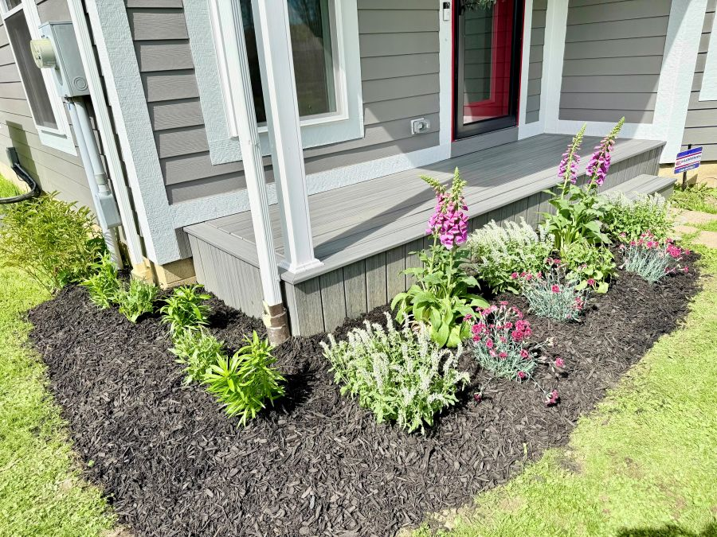
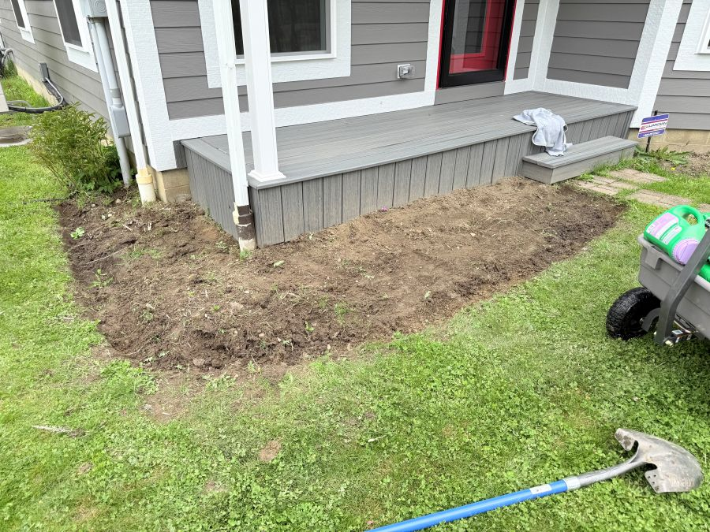
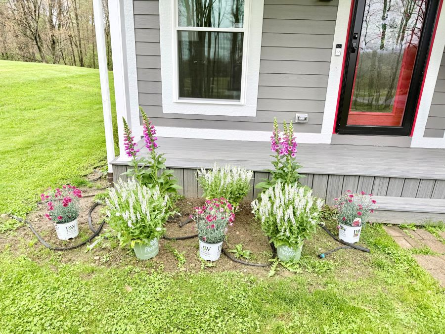
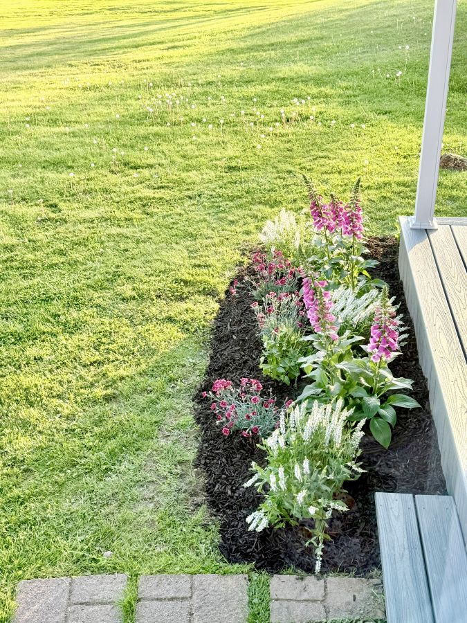

For decades, the front of this house was an afterthought. When my parents built and lived here, their focus and care were directed almost entirely toward the backyard. The front yard was a simple landscape of necessity—a lone boxwood and very little else. It functioned, but it didn’t welcome.
We are slowly working to change that, moving toward what we feel is a more balanced and common-sense approach to landscaping. The goal is to treat the front door as what it is supposed to be: the primary entryway to the home. This is the first step of a larger front bed transformation project that will eventually reach toward the garage and wrap around the dining room.
Layering the Bed

Rick began the work by tilling the soil and integrating fresh topsoil to give the new plants a fighting chance in the previously neglected ground. We’ve selected a palette of perennials that will grow and provide color for years to come: salvia, dianthus, daylilies, and foxglove.
The foxgloves are particularly exciting additions. As biennials, they follow a two-year rhythm, often flowering every other year. We are hoping that with a bit of luck and a happy environment, they might seed themselves enough to offer more frequent blooms.

Function and Form
To support the long-term health of the bed, Rick installed a drip hose line for consistent deep watering. To hide the lines and help the soil retain moisture during the warmer months, he finished the bed with a layer of black mulch. The dark contrast brings a sudden, sharp definition to the house’s foundation that has been missing for years.

This transformation will happen gradually—one bed and one season at a time. For now, the front of the house is finally beginning to tell the same story as the rest of the property: one of restoration, patience, and intentional growth.